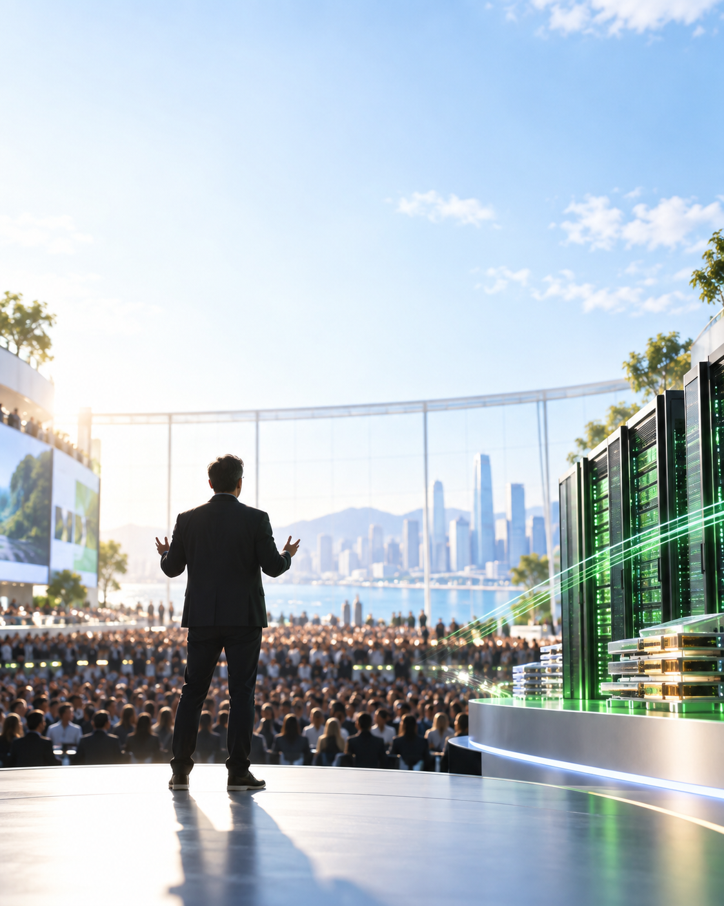
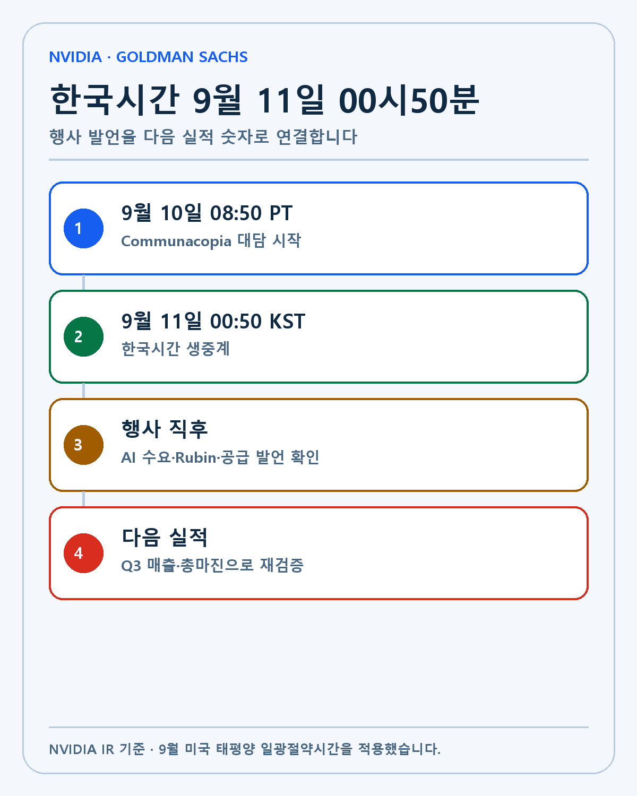
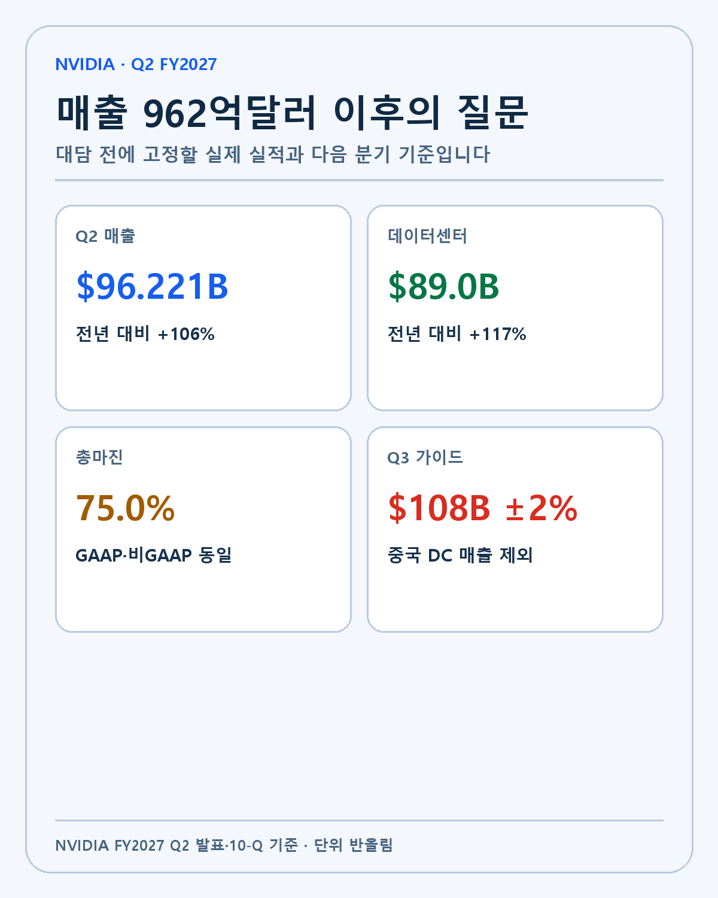
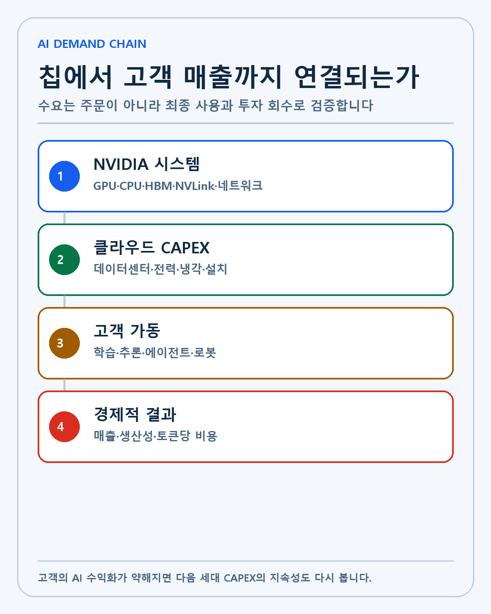
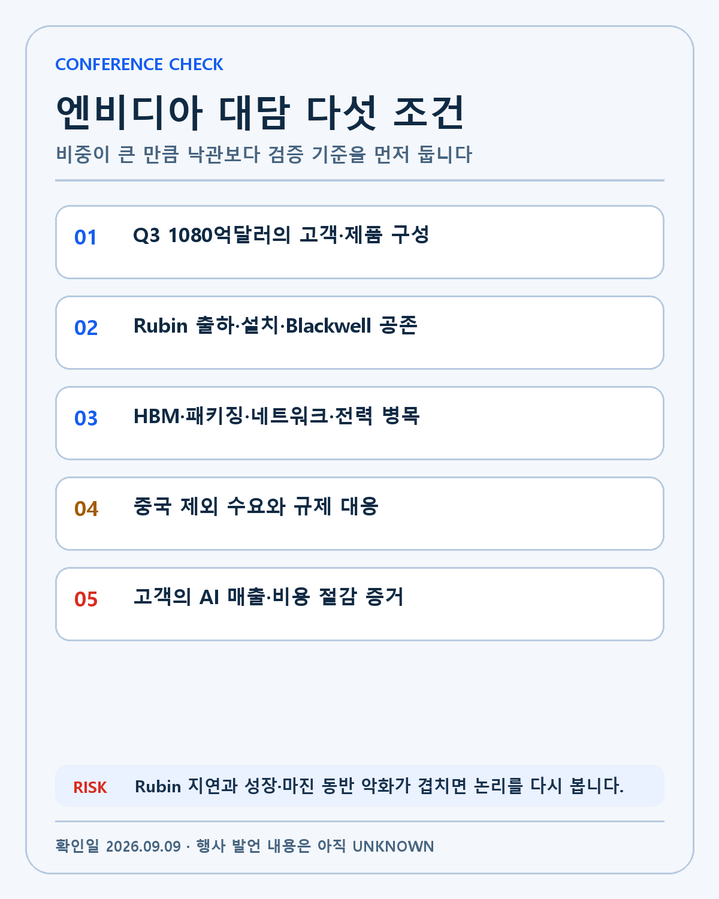

NVIDIA · DEEP RESEARCH
NVIDIA Goldman Sachs 대담 프리뷰: 962억달러 매출 뒤 Rubin과 AI 수요의 지속성
한국시간 9월 11일 오전 12시50분 NVIDIA 대담을 Q3 가이던스·Rubin·공급 병목·중국 제외 수요·고객 경제성으로 분석합니다.

엔비디아가 미국 태평양시간 9월 10일 오전 8시 50분 Goldman Sachs Communacopia + Technology Conference에 참여합니다. 한국시간으로는 9월 11일 금요일 오전 12시 50분입니다. NVIDIA의 공식 행사 공지에 따르면 발표 내용은 생중계되고 다시보기는 90일 동안 제공됩니다.
이번 행사는 신제품 발표회가 아니라 금융 커뮤니티를 위한 대담입니다. Jensen Huang이 실적 발표 뒤 처음으로 AI 수요와 공급, Vera Rubin의 생산, 중국 시장을 어떻게 설명하는지 들을 수 있습니다. 새로운 계약이나 수치가 공개된다는 보장은 없습니다. 행사 전에 발언 내용을 결과처럼 쓰지 않겠습니다.
저는 엔비디아를 장기 보유하고 있습니다. 포트폴리오에서 비중이 크다는 사실도 알고 있습니다. 그렇다고 집중을 실수로만 보지는 않습니다. AI 시대의 컴퓨트, 네트워크와 소프트웨어를 연결하는 핵심 기업이라는 분석이 유지되기 때문에 보유합니다. 이번 대담은 그 분석의 가운데 연결고리가 여전히 강한지 확인하는 자리입니다.
행사는 한국시간 9월 11일 오전 12시 50분입니다
9월 미국 서부는 일광절약시간인 PDT를 적용합니다. PDT는 UTC-7, 한국은 UTC+9이므로 16시간 차이가 납니다. 미국 태평양시간 9월 10일 오전 8시 50분에 16시간을 더하면 한국시간 9월 11일 오전 12시 50분입니다.
| 구분 | 미국 태평양시간 | 한국시간 | 확인할 내용 |
|---|---|---|---|
| Goldman Sachs 대담 | 9월 10일 오전 8시 50분 | 9월 11일 오전 12시 50분 | AI 수요·Rubin·공급 |
| 행사 직후 | 대담 종료 뒤 | 9월 11일 새벽 | 신규 수치·계약의 공식성 |
| 후속 확인 | 다시보기·IR 자료 | 같은 날 이후 | 발언 문맥과 기존 가이던스 |

행사 전에는 질문과 확인 기준만 정할 수 있습니다. 실제 발언은 UNKNOWN입니다. 대담 직후에는 짧게 잘린 문장보다 전체 문맥과 공식 다시보기를 우선하겠습니다.
현재 기준선은 매출 962억2100만달러입니다
NVIDIA FY2027 2분기 실적에 따르면 분기 매출은 962억2100만달러로 전년보다 106%, 직전 분기보다 18% 증가했습니다. 데이터센터 매출은 890억달러로 전년보다 117%, 직전 분기보다 18% 늘었습니다.
규모가 커질수록 같은 성장률을 유지하기는 어려워집니다. 그럼에도 매출이 전년의 두 배를 넘었다는 것은 AI 인프라 투자가 아직 강하다는 증거입니다. 다만 데이터센터 매출이 전체의 92%를 넘는 만큼 고객의 투자 속도와 제품 전환이 흔들리면 회사 전체 실적에 미치는 영향도 큽니다.
GAAP과 비GAAP 총마진은 모두 75.0%였습니다. Blackwell Ultra의 생산 확대가 매출을 끌어올리면서도 높은 마진을 지켰습니다. 다음 분기 회사 가이던스는 매출 1080억달러 ±2%, 총마진 74.0% ±0.5%포인트입니다. 성장과 제품 전환 비용이 마진에 어떤 조합으로 나타나는지 봐야 합니다.

Vera Rubin은 발표보다 랙 가동이 중요합니다
NVIDIA는 Vera Rubin 플랫폼이 생산 확대 단계에 들어갔고 CoreWeave, Google Cloud, Microsoft Azure, Oracle Cloud Infrastructure, Nebius의 랙에서 가동되고 있다고 밝혔습니다. 로드맵이 슬라이드에만 남아 있지 않고 고객 인프라로 이동하고 있다는 의미입니다.
새 아키텍처의 가치는 칩 하나의 성능으로만 결정되지 않습니다. CPU, GPU, HBM, NVLink, 네트워크, 냉각과 소프트웨어가 한 시스템으로 작동해야 합니다. 고객이 기존 Blackwell 인프라에서 Rubin으로 이동할 때 설치 시간과 전력 효율, 토큰당 비용이 실제로 개선돼야 합니다.
행사에서 저는 ‘생산 중’이라는 표현보다 출하 시점과 고객 가동률, 공급 가능한 랙 수를 듣고 싶습니다. 메모리와 전력, 고급 패키징이 병목이라면 수요가 강해도 매출 전환 속도는 제한됩니다. Rubin이 Blackwell 매출을 너무 빨리 밀어내는지, 두 세대가 용도별로 공존하는지도 중요합니다.
1080억달러 가이던스의 질을 확인합니다
회사가 제시한 Q3 매출 1080억달러는 Q2 실제 매출보다 약 12% 높은 중앙값입니다. 성장 자체는 강합니다. 다만 어느 고객과 제품이 성장을 만드는지 구분해야 합니다. hyperscaler, AI 네이티브, 기업, 국가 AI 고객이 함께 늘면 수요 기반이 넓어집니다. 일부 고객의 프로젝트가 대부분을 차지하면 매출 변동성이 커집니다.
NVIDIA는 Q3 가이던스에 중국 데이터센터 컴퓨트 매출을 가정하지 않았습니다. 중국 매출이 다시 열리면 상방이 될 수 있지만, 규제와 허가를 예측해 기본 시나리오에 넣지 않겠습니다. 반대로 중국이 없어도 1080억달러를 달성할 수 있다는 설명은 다른 지역의 수요가 얼마나 강한지 보여 줍니다.
NVIDIA FY2027 2분기 10-Q에 따르면 Q2 중국향 데이터센터 Hopper 출하는 데이터센터 매출의 1% 미만이었습니다. 이 수치로 중국 위험이 사라졌다고 볼 수는 없습니다. 잠재 시장의 상실, 규제 준수 비용, 현지 경쟁의 성장은 별도의 장기 위험입니다.

이번 대담에서 확인할 다섯 조건입니다
- Q3 매출 1080억달러 가이던스를 지탱하는 고객군과 제품 구성을 확인합니다.
- Vera Rubin의 실제 출하·설치·가동 시점과 Blackwell Ultra의 공존 경로를 봅니다.
- HBM, 패키징, 네트워크와 전력 가운데 가장 큰 공급 병목이 무엇인지 듣습니다.
- 중국 매출을 제외한 상태에서 지역별 수요와 규제 대응을 확인합니다.
- 고객의 AI 매출과 비용 절감이 CAPEX를 정당화하는지 중간 증거를 봅니다.

강세 시나리오는 Rubin 생산과 고객 랙 가동이 계획보다 빠르고, hyperscaler뿐 아니라 AI 네이티브와 기업 고객의 수요가 함께 늘어나는 경우입니다. 공급 제약이 완화되면서 1080억달러 가이던스의 상단을 뒷받침한다면 기술 해자와 성장률 논리가 강화됩니다.
기준 시나리오는 수요는 강하지만 메모리와 전력, 시스템 구축 속도가 매출 전환을 제한하는 경우입니다. 회사가 가이던스를 유지하더라도 병목이 길어지면 주문과 매출 사이의 시간이 늘어납니다. 저는 이 경우 보유 논리를 바꾸기보다 다음 실적의 매출과 마진을 기다리겠습니다.
약세 시나리오는 고객의 AI 수익화 설명이 약해지고, Rubin 전환 지연이나 공급 비용 상승으로 매출과 총마진 가이던스가 동시에 낮아지는 경우입니다. 중국 규제와 고객 집중 위험까지 겹치면 단기 가격 조정이 아니라 펀더멘털 변화인지 검토해야 합니다.
집중투자는 죄가 아니라 검증 의무를 키웁니다
엔비디아와 팔란티어 비중이 높은 것은 사실입니다. 저는 두 기업이 AI 시대의 핵심 컴퓨트와 소프트웨어 플랫폼이라는 판단으로 비중을 유지합니다. 분산을 위해 잘 모르는 기업을 추가하는 것보다 가장 잘 이해하는 기업의 기술과 현금흐름을 계속 검증하는 편을 택했습니다.
그렇다고 비중이 크다는 사실을 가볍게 보지는 않습니다. 좋은 기업도 기대가 너무 높거나 기술 경쟁력이 약해지면 투자 결과가 달라집니다. 집중도가 높을수록 경영진의 말보다 고객 사용량, 매출, 마진과 현금흐름을 더 자주 확인해야 합니다. 이번 행사를 낙관을 강화하는 재료로만 사용하지 않겠습니다.
저의 매도 기준은 기술 경쟁력의 약화와 창업자·경영진의 방향 변화입니다. 단기 주가 하락은 그 자체로 매도 이유가 아닙니다. 반대로 주가가 올라도 CUDA와 네트워크, 시스템 통합의 해자가 약해지거나 고객이 자체 칩으로 빠르게 이동한다면 보유 논리를 다시 써야 합니다.
산업의 연결도 함께 보겠습니다
NVIDIA 랙 한 대에는 GPU만 들어가지 않습니다. HBM과 서버 메모리, 고속 네트워크, 광부품, 전력과 냉각이 필요합니다. 마이크론의 HBM 공급, 브로드컴의 네트워크와 맞춤형 가속기, 오라클·Microsoft·Amazon·Google의 데이터센터 투자가 같은 사슬에 있습니다.
엔비디아가 강한 가이던스를 제시해도 클라우드 사업자의 잉여현금흐름과 전력 확보가 버티지 못하면 산업 전체 투자가 느려질 수 있습니다. 반대로 클라우드 고객이 AI 서비스에서 매출과 생산성 효과를 만들면 다음 세대 Rubin 투자의 경제성이 높아집니다. 이번 대담에서 고객의 투자수익률을 어떤 실제 사례로 설명하는지 보겠습니다.
저는 GPU 다음 반도체 사이클을 충분히 보지 못했던 경험이 있습니다. 그래서 이제는 개별 칩의 승패보다 컴퓨트, 네트워크, 메모리, 전력과 최종 AI 서비스가 연결되는 경로를 봅니다. 엔비디아가 그 연결의 중심에 있는지는 매 분기 다시 증명돼야 합니다.
행사 뒤에는 발언을 숫자로 번역하겠습니다
첫째, 행사 다시보기에서 Jensen Huang의 발언을 전체 문맥으로 확인합니다. 둘째, 신규 수치와 계약이 있다면 NVIDIA IR이나 계약 상대방의 공식 발표로 대조합니다. 셋째, 수요가 강하다는 표현을 Q3 매출 1080억달러와 고객군별 근거로 연결합니다. 넷째, Rubin 생산과 공급 병목은 다음 분기 매출과 총마진으로 재확인합니다.
행사 당일 주가가 움직여도 대담 때문이라고 바로 단정하지 않겠습니다. 금리와 반도체 지수, 다른 AI 기업 뉴스가 동시에 영향을 줄 수 있습니다. 원인이 확인되지 않으면 UNKNOWN으로 남기겠습니다.
이번 대담의 핵심 질문은 간단합니다. 962억2100만달러 분기 매출을 만든 AI 수요가 Rubin 시대에도 이어지고, 고객이 그 투자를 실제 매출과 생산성으로 회수할 수 있는가입니다. 기술의 우위와 고객 경제성이 함께 유지된다면 저는 단기 가격과 보유 논리를 분리하겠습니다. 둘 중 하나가 약해지면 비중이 큰 만큼 더 엄격하게 다시 보겠습니다.
AI 수요를 세 층으로 나눠 봅니다
첫 번째 층은 hyperscaler입니다. Microsoft, Amazon, Google, Oracle 같은 기업이 데이터센터를 짓고 NVIDIA 시스템을 구매합니다. 투자 규모가 크고 반복 주문이 가능하지만 소수 고객 비중이 높습니다. 각 회사의 CAPEX와 현금흐름이 NVIDIA 수요의 선행지표가 됩니다.
두 번째 층은 AI 네이티브와 클라우드 사업자입니다. 모델 회사와 CoreWeave, Nebius 같은 AI 인프라 사업자가 컴퓨트를 직접 구매하거나 임대합니다. 성장 속도는 빠르지만 계약 구조와 자금조달, 최종 고객 수요를 확인해야 합니다. 공급된 GPU가 실제 유료 사용으로 이어지는지가 중요합니다.
세 번째 층은 기업과 국가 AI입니다. 금융, 제조, 헬스케어, 통신과 공공기관이 추론과 에이전트, 로봇을 도입합니다. 이 층이 넓어지면 소수 모델 기업에 대한 의존도가 낮아집니다. 다만 시범사업과 본격 배포를 구분해야 합니다. 사용자 수와 추론량, 고객의 비용 절감처럼 운영 단계의 증거가 필요합니다.
이번 대담에서 수요가 강하다는 말이 나오면 어느 층을 뜻하는지 기록하겠습니다. 서로 다른 고객군을 하나의 AI 수요로 묶으면 성장의 질과 위험을 놓치기 쉽습니다.
Rubin 전환의 경제성을 계산하는 틀입니다
고객이 새 시스템을 구매하는 이유는 벤치마크 점수만이 아닙니다. 같은 전력과 공간에서 더 많은 토큰을 처리하고, 더 짧은 시간에 모델을 학습하며, 운영 인력을 줄일 수 있어야 합니다. 총소유비용은 장비 가격, 전력, 냉각, 네트워크, 소프트웨어와 가동률을 함께 포함합니다.
Rubin의 랙 가격이 높아도 토큰당 비용이 더 빠르게 낮아지면 고객에게 경제성이 있습니다. 반대로 성능 향상은 크지만 전력과 설치 비용이 더 커지고 가동이 늦어지면 투자 회수 기간이 늘어납니다. NVIDIA가 제시하는 성능 배수는 실제 고객 워크로드와 가동률에서 다시 확인해야 합니다.
Blackwell Ultra와 Rubin이 겹치는 기간도 중요합니다. 고객이 Rubin을 기다리며 Blackwell 주문을 미루는 공백이 생기면 매출 변동성이 커질 수 있습니다. 반대로 두 세대가 학습과 추론, 고객 예산에 따라 공존하면 제품 전환이 더 부드럽습니다. 행사에서 주문 취소보다 공급 배분의 문제인지 들어보겠습니다.
공급 병목은 매출과 마진에 다르게 작용합니다
HBM이 부족하면 완성된 GPU 시스템 출하가 늦어집니다. 고급 패키징이 부족해도 같은 문제가 생깁니다. 네트워크 스위치와 광부품이 준비되지 않으면 랙 전체가 가동되지 못할 수 있습니다. 전력과 데이터센터 건설은 칩보다 더 긴 시간이 필요한 경우도 있습니다.
공급이 부족하면 단기 가격과 마진을 지지할 수 있지만 판매 가능한 수량을 제한합니다. 병목을 풀기 위해 장기 구매약정과 선급금을 늘리면 운전자본과 계약 위험이 커집니다. 공급이 충분해진 뒤에는 경쟁과 고객 협상력이 마진에 영향을 줄 수 있습니다.
총마진 75.0%는 현재 기술과 공급망의 강함을 보여 줍니다. Q3 가이던스 중앙값은 74.0%입니다. 1%포인트 하락만 보고 해자가 약해졌다고 단정하지 않겠습니다. 제품 전환 비용, 재고 평가, 공급계약과 매출 구성을 분리해 봅니다. 하락이 여러 분기 이어지고 가격 경쟁이나 고객 전환이 원인이라면 의미가 달라집니다.
집중 포트폴리오용 행사 기록표입니다
| 질문 | 현재 기준 | 행사에서 들을 내용 | 다음 실적에서 검증 |
|---|---|---|---|
| 수요 규모 | Q2 매출 962.21억달러 | 고객군별 수요와 주문 가시성 | Q3 매출 1080억달러 ±2% |
| 데이터센터 | Q2 890억달러 | hyperscaler·AI 네이티브·기업 비중 | 성장률과 고객 집중 |
| 제품 전환 | Rubin 생산 확대 | 출하·설치·Blackwell 공존 | 매출 구성과 재고 |
| 공급 | 메모리·전력 제약 | 가장 큰 병목과 완화 시점 | 출하량·총마진 |
| 중국 | Q3 가이던스에서 제외 | 규제·제품·허가 대응 | 실제 중국 매출 |
| 수익성 | Q2 총마진 75.0% | 시스템 경제성과 가격 | Q3 74.0% ±0.5%p |
이 표는 제가 보유 비중을 합리화하기 위한 것이 아닙니다. 오히려 비중이 클수록 어떤 사실이 논리를 약하게 만드는지 미리 적어 두는 장치입니다. 행사 뒤 좋은 문장만 골라 기록하지 않고, 답변을 피한 질문과 공개되지 않은 수치도 남기겠습니다.
경쟁 해자를 확인하는 질문입니다
NVIDIA의 해자는 GPU 성능 하나가 아닙니다. CUDA와 개발자 생태계, 라이브러리, NVLink와 네트워크, 서버 설계, 클라우드 파트너가 결합돼 있습니다. 고객이 다른 가속기를 쓰려면 소프트웨어와 운영 방식을 바꾸는 비용이 생깁니다. 이 전환비용이 유지되는지가 장기 경쟁력의 핵심입니다.
맞춤형 ASIC과 다른 GPU 업체가 성장한다고 NVIDIA의 시장이 곧 사라지는 것은 아닙니다. AI 컴퓨트 시장 전체가 더 빨리 커지면 여러 아키텍처가 함께 성장할 수 있습니다. 반대로 자체 칩의 성능과 소프트웨어 편의성이 빠르게 좋아지고 NVIDIA 시스템의 가격 프리미엄을 정당화하지 못하면 해자는 약해집니다.
행사에서 경쟁사를 직접 평가하는 말보다 고객이 여러 칩을 쓰면서도 NVIDIA를 선택하는 이유를 듣고 싶습니다. 개발 시간, 토큰당 비용, 가동률과 신제품 전환 속도처럼 측정 가능한 근거가 필요합니다.
행사 이후 업데이트 원칙입니다
대담이 끝나면 공식 다시보기와 NVIDIA IR 자료를 확인합니다. 발언이 기존 Q2 실적과 다른 새로운 사실인지 구분하고, 신규 계약은 상대방 발표까지 대조합니다. 숫자가 없는 전망은 해석으로 표시합니다. 기자나 분석가의 요약은 원문을 찾는 길잡이로만 사용합니다.
다음 실적에서는 Q3 매출, 데이터센터 성장, 총마진과 현금흐름을 같은 표에 넣습니다. Rubin 출하가 시작됐다는 말은 제품 매출과 고객 가동으로 확인합니다. AI 투자의 경제성은 고객사의 매출, 생산성 또는 비용 절감 사례로 확인합니다.
제가 틀렸다는 신호도 미리 남깁니다. CUDA 전환비용이 낮아지고 주요 고객이 자체 칩으로 빠르게 이동하는 경우, Rubin이 반복적으로 지연되는 경우, 매출 성장과 총마진이 동시에 여러 분기 악화되는 경우, 경영진이 수요와 공급 설명을 계속 바꾸는 경우입니다. 하나의 분기보다 방향이 이어지는지 보겠습니다.
이 글은 개인 투자 기록이며 특정 종목의 매수·매도를 권유하지 않습니다. 행사 전에는 발언 내용과 신규 수치를 알 수 없으며, 회사 전망은 실제 결과와 다를 수 있습니다. 모든 투자 판단과 책임은 투자자 본인에게 있습니다.
작성 방법
2026년 9월 9일 기준 공식 자료와 공시를 우선하고 실제·회사 전망·시나리오·UNKNOWN을 분리했습니다.
개인 투자 기록이며 특정 종목의 매수·매도를 권유하지 않습니다.